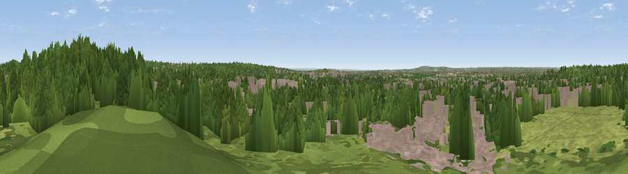

Moon Hill
#32956 in England · top 21% of its area beats it · near WalthamstowThe view, rendered

A 360° render of this exact spot computed from the terrain model, tree cover and land cover — summer colours, afternoon light, calibrated against photographs of famous viewpoints. Real trees, hedges and buildings will differ in detail.
The panorama
Grey silhouette: terrain skyline in each direction (720 bearings, Earth curvature and refraction included). Dashed green: skyline with trees (+15 m) and buildings (+8 m) as obstacles. Blue strip: how far the ground is visible on each bearing.
Where the view opens
Wedge length = distance to the farthest visible ground on that bearing (vegetation-aware). Rings at 10, 25 and 50 km.
What fills the view
45% woodland · 38% built-up · 17% grassland
Angular shares of the visible panorama (visual magnitude), not map area. Landscape diversity 0.46 (0–1 Shannon).
Key numbers
More beautiful places nearby
The staircase of upgrades: each row has a higher view potential than everything closer. Driving times are estimates from straight-line distance, calibrated against real road routing — check an actual route before setting out.
| Place | Direction | Drive | Score |
|---|---|---|---|
| Viewpoint near Sewardstonebury | N · 3 km | ~6 min | 50.3 |
| Viewpoint near Wood Green | WSW · 9 km | ~17 min | 51.8 |
| Viewpoint near Eltham | SSE · 17 km | ~30 min | 52.2 |
| Viewpoint near Erith | SE · 19 km | ~33 min | 54.3 |
| Harrow on the Hill | W · 23 km | ~38 min | 60.7 |
| Viewpoint near Tatsfield | S · 37 km | ~56 min | 61.0 |
| Viewpoint near Limpsfield | S · 37 km | ~56 min | 62.7 |
| Viewpoint near Limpsfield | S · 38 km | ~57 min | 66.0 |
51.61373, -0.00721 · source: osm peak · position refined by local search. Computed location — check access rights before visiting.